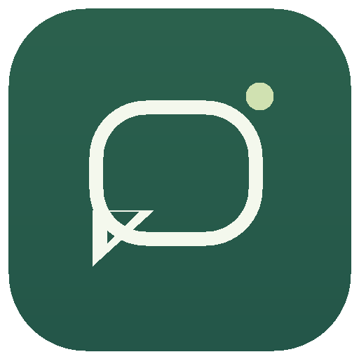

흐름을 읽는 초안
최근 대화를 문맥으로 삼아 초안을 만들어요. 연속 메시지는 잠시 기다리고, 직접 답장하면 진행 중인 생성을 멈춰요.

답장노트.뭐라고 답할지 고민되는 순간,
답장노트가 대화의 흐름을 읽고 초안을 준비해요.
마지막 한 문장은, 당신의 말로 완성하세요.
macOS · Windows 개인용 데스크톱 앱 / 베타
좋지! 나도 오랜만에 보고 싶었어.
토요일 오후는 어때? 😊
이해를 돕기 위한 가상 대화와 화면 예시입니다.
✓ 초안은 앱에서 확인
✓ 상대에게 자동 전송 없음
✓ 내가 고른 채팅방만
계속 들여다보지 않아도 괜찮아요.
연결한 대화 곁에서 답장을 준비할게요.
최근 대화를 문맥으로 삼아 초안을 만들어요. 연속 메시지는 잠시 기다리고, 직접 답장하면 진행 중인 생성을 멈춰요.
공통 프롬프트에 원하는 말투와 답장 방식을 적어두세요. 연결된 Codex에서 모델과 추론 강도도 선택할 수 있어요.
여러 채팅방의 감지를 따로 켜고 끄거나, 필요할 때 직접 초안을 만들어요. 준비된 초안은 앱에서 확인하고 다듬으세요.
카카오톡과 로그인된 Codex CLI가 필요해요.
준비가 끝나면 앱에서 연결을 확인하세요.
사용하는 운영체제에 맞는 파일을 받아 설치해요. Codex CLI도 설치하고 로그인해주세요.
카카오톡의 일반 1:1 채팅방을 별도 창으로 열고 앱에 추가해요. Mac에서는 손쉬운 사용 권한을 허용해주세요.
공통 프롬프트를 저장하고 연결 시험 후 감지를 시작하세요. Windows는 실제 대화와 발신 방향을 먼저 확인해주세요.
사용하는 컴퓨터에 맞는 답장노트를 만나보세요.
Apple Silicon · ZIP
Mac 다운로드 v0.4.2 · 베타Windows 10 / 11 · x64 · 설치 파일
Windows 다운로드 v0.4.2 · 베타 · 실제 연결 검증 중현재 개인용 베타입니다. Mac 공인 배포 서명·공증 및 Windows 배포 서명은 설정되지 않았어요.
Mac Intel용 다운로드는 아직 제공하지 않습니다.
최근 대화와 초안은 컴퓨터에 저장돼요. 초안을 생성할 때 최근 텍스트 대화와 프롬프트가 Codex CLI를 통해 OpenAI 서비스로 전송돼요. 대화 기록 자체는 로컬 JSON 평문으로 보관됩니다.
상대방에게 자동으로 전송하지 않아요. 기본값은 앱에서 초안 확인과 로컬 알림이에요. 선택 기능으로 카카오 공식 API를 설정하면 본인의 ‘나와의 채팅’에 전달할 수 있어요.
사용자가 직접 연 일반 1:1 채팅방을 연결해요. 사진·파일·이모티콘 내용은 해석하지 않아요. 채팅방을 닫거나 최소화하면 읽지 못할 수 있고, 읽음 처리될 수 있어요. Windows 연결은 시험 지원 상태입니다.
카카오톡 로그인과 별도로 OS에 설치된 Codex CLI의 로그인이 필요해요. Mac은 손쉬운 사용 권한을 허용해야 하며, 운영체제 보안 설정에 따라 설치 시 추가 확인이 필요할 수 있어요. Windows에서는 네이티브 Codex CLI를 사용해주세요.
당신의 말을 대신하기보다,
당신의 말이 시작되도록.